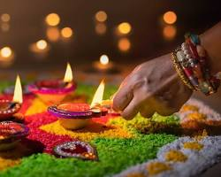
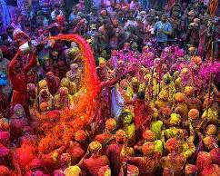
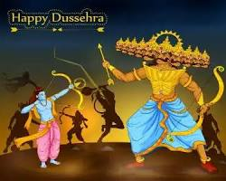
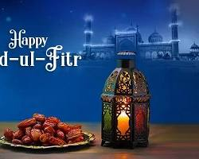
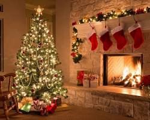
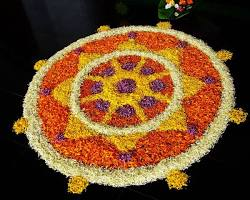

India is a country where the calendar is literally overflowing with festivals, each one a unique celebration of its rich and diverse culture, religion, and traditions. From ancient rituals to modern celebrations, these festivals are a vibrant tapestry that reflects the soul of India.
Major Festivals of India:
- Diwali:
The "Festival of Lights" is arguably the most popular festival in India, celebrated by Hindus, Sikhs, and Jains. It marks the triumph of good over evil, light over darkness, and knowledge over ignorance. Homes are lit with diyas (clay lamps), fireworks light up the night sky, and sweets are exchanged, creating a joyous atmosphere.
- Holi:
The "Festival of Colors" signifies the arrival of spring and the victory of good over evil. People playfully smear each other with colorful powders (gulal) and water balloons, creating a joyous and vibrant atmosphere.
- Dusshera:
This festival celebrates the victory of Lord Rama over the demon king Ravana, signifying the triumph of good over evil. It's marked by grand processions with effigies of Ravana being burnt, symbolizing the destruction of negativity.
- Eid-ul-Fitr:
This joyous festival marks the end of the Islamic holy month of Ramadan. Families gather for special prayers, feasts, and gift-giving.
- Christmas
This Christian festival celebrates the birth of Jesus Christ. Churches are adorned with decorations, hymns are sung, and special meals are prepared.
- Onam:
TThis ten-day harvest festival marks the homecoming of King Mahabali, a legendary king of Kerala. It's celebrated with pookalam (flower rangolis), elaborate feasts, and traditional dances.